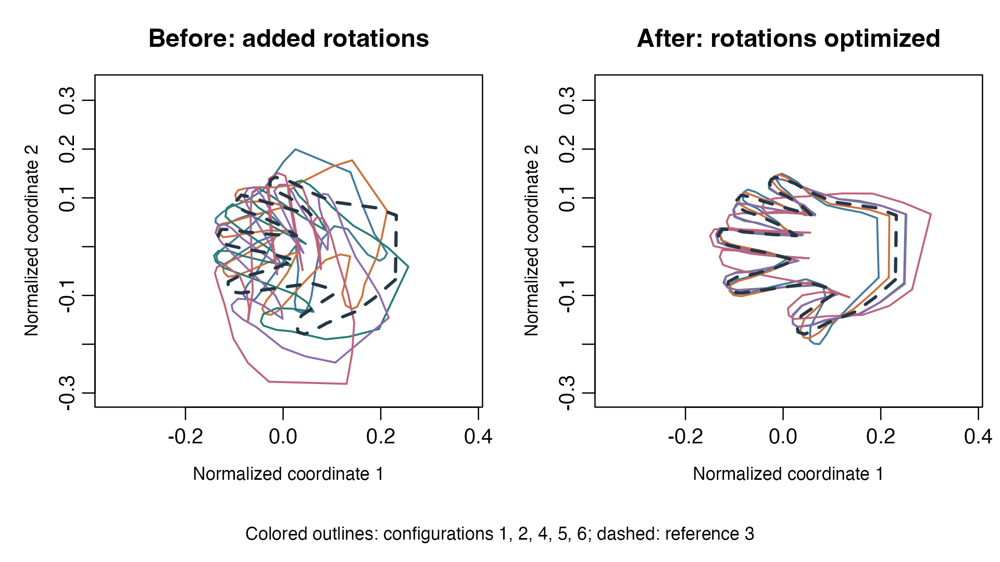

Align hand shapes without reflections
Source:vignettes/articles/example-hands-alignment.Rmd
example-hands-alignment.RmdTwo outlines can have the same shape but different positions, sizes, and orientations. Centering and normalization remove position and positive scale; a rotation can then align corresponding landmarks while preserving handedness. This small example introduces optimization over rotation matrices, with an independent closed-form solution for comparison.
Start with getting started for the problem-and-solver interface. The geometry and metrics guide explains how the geometry determines the gradient and feasible search directions.
Data: corresponding hand landmarks
The hands dataset from Riemann 0.1.7
contains 40 configurations of four people’s left hands, with 56
corresponding planar landmarks per configuration. For each person, the
first six configurations run from maximally to minimally spread fingers.
We use these six configurations for person 1 and align five of them to
configuration 3. They are repeated poses of one person, not six
independent people.
The bundled snapshot is extracted from Riemann’s pinned source. No installation of Riemann or download is needed. Landmark coordinates have no documented physical unit; after normalization they are dimensionless. See data sources and reproducibility for provenance, attribution, and extraction details.
hands <- readRDS("data/riemann-hands.rds")
stopifnot(identical(dim(hands$data), c(56L, 2L, 40L)),
length(hands$person) == 40L, !anyNA(hands$data))
selected <- which(hands$person == 1)[1:6]
normalize_shape <- function(X) {
centered <- sweep(X, 2, colMeans(X))
centered / sqrt(sum(centered^2))
}
shapes <- lapply(selected, function(i) normalize_shape(hands$data[, , i]))
target <- shapes[[3]]
moving_indices <- c(1, 2, 4, 5, 6)
# Add known rotations solely to make the alignment step easy to see.
angles <- c(-65, -35, 25, 50, 80) * pi / 180
rotation <- function(angle) {
matrix(c(cos(angle), sin(angle), -sin(angle), cos(angle)), 2, 2)
}
moving <- lapply(seq_along(moving_indices), function(j) {
shapes[[moving_indices[j]]] %*% rotation(angles[j])
})The added rotations are a demonstration transformation, not a property of the recorded poses. The original variation in finger opening remains. Every shape has centroid zero and Frobenius norm one; no reflection is applied.
Objective and geometry
For a moving landmark matrix and reference , solve
The rows of
are landmarks, so rotations multiply from the right. manifold.rotation(2)
represents the orientation-preserving rotations with the embedded
Frobenius metric. Restricting the determinant to +1 prevents a left hand
from being matched by a reflection.
rotations <- manifold.rotation(2)
make_problem <- function(X, Y) {
riem.problem(
rotations,
fn = function(R, data) (data$X$matmul(R) - data$Y)$square()$sum() / 2,
data = list(
X = torch_tensor(X, dtype = torch_float64(), device = "cpu"),
Y = torch_tensor(Y, dtype = torch_float64(), device = "cpu")
)
)
}Both objective tensors are registered through data, so
the execution driver can place them on the same device as the point.
Automatic differentiation provides the ambient gradient and the rotation
geometry converts it to a Riemannian gradient.
Solve the five alignments
initial <- torch_eye(2, dtype = torch_float64(), device = "cpu")
fits <- lapply(moving, function(X) {
riem.optimize(
make_problem(X, target), initial, method = "conjugate_gradient",
control = list(max_iterations = 100, gradient_tolerance = 1e-7),
device = "cpu"
)
})
estimated_rotations <- lapply(fits, function(fit) as.matrix(fit$point))
aligned <- Map(function(X, R) X %*% R, moving, estimated_rotations)
before <- vapply(moving, function(X) sum((X - target)^2) / 2, numeric(1))
after <- vapply(fits, function(fit) fit$objective, numeric(1))
termination <- vapply(fits, function(fit) fit$termination, character(1))
data.frame(configuration = moving_indices, before, after, termination)
#> configuration before after termination
#> 1 1 0.59403274 0.008809639 converged_gradient
#> 2 2 0.18503705 0.001769416 converged_gradient
#> 3 4 0.08930941 0.003653478 converged_gradient
#> 4 5 0.34200511 0.003683297 converged_gradient
#> 5 6 0.79373736 0.038943877 converged_gradientconverged_gradient means the metric gradient norm passed
the stopping threshold. Exhausting the iteration budget is a different
outcome; inspect termination before interpreting a returned
point as a converged solution. Even at an optimum, different finger
poses leave a nonzero alignment error.
Plot the outlines before and after alignment

Five poses of the same left hand, with demonstration rotations added on the left. Rotation alignment preserves the differences in finger opening visible on the right.
Independent verification
For this objective, a determinant-corrected SVD gives a global
optimum. If
,
then
.
The determinant correction is needed because an unconstrained orthogonal
Procrustes solution may be a reflection. This reference uses base R’s
svd().
svd_rotation <- function(X, Y) {
decomposition <- svd(crossprod(X, Y))
orientation <- det(decomposition$u %*% t(decomposition$v))
decomposition$u %*% diag(c(1, sign(orientation))) %*% t(decomposition$v)
}
reference_rotations <- lapply(moving, svd_rotation, Y = target)
reference_objectives <- vapply(seq_along(moving), function(j) {
sum((moving[[j]] %*% reference_rotations[[j]] - target)^2) / 2
}, numeric(1))
rotation_error <- max(vapply(seq_along(fits), function(j) {
max(abs(estimated_rotations[[j]] - reference_rotations[[j]]))
}, numeric(1)))
orthogonality_error <- max(vapply(estimated_rotations, function(R) {
max(abs(crossprod(R) - diag(2)))
}, numeric(1)))
determinant_error <- max(abs(vapply(estimated_rotations, det, numeric(1)) - 1))
objective_error <- max(abs(after - reference_objectives))
# Centering and normalization remove translation and positive uniform scale.
original <- hands$data[, , selected[1]]
transformed <- sweep(3.7 * original, 2, c(11, -7), "+")
normalization_error <- max(abs(normalize_shape(transformed) - shapes[[1]]))
checks <- c(rotation_error = rotation_error,
orthogonality_error = orthogonality_error,
determinant_error = determinant_error,
objective_error = objective_error,
normalization_error = normalization_error)
checks
#> rotation_error orthogonality_error determinant_error objective_error
#> 1.131829e-07 4.440892e-16 2.220446e-16 9.382252e-15
#> normalization_error
#> 3.053113e-16
stopifnot(all(termination == "converged_gradient"),
rotation_error < 1e-6, orthogonality_error < 1e-10,
determinant_error < 1e-10, objective_error < 1e-10,
normalization_error < 1e-12, all(after <= before + 1e-12))The rotation tolerance is looser than the objective tolerance because objective errors are second order near a minimum. These checks also confirm preservation of handedness and invariance of the preprocessing to translation and positive scale.
Interpretation and limits
This is alignment to a fixed reference, not an
intrinsic mean on Kendall shape space. It assumes that landmark rows
correspond across configurations, and keeps genuine differences in
finger pose. It also differs from Riemann’s wrap.landmark()
representation, which permits reflection equivalence. Here the rotation
manifold explicitly forbids reflections.
The SVD solution is the direct approach for this particular objective. The optimization formulation becomes useful when an alignment objective includes additional terms that no longer admit this closed-form solution. For another short introduction with an independent matrix-factorization check, try principal-direction optimization.
Choose a device for your own run
The article uses explicit CPU float64 execution. For your own runs,
change device in riem.optimize();
registered data move with the point. Such a small problem will usually
not benefit from GPU execution.
# device = "auto" # discover a suitable device and preserve float64
# device = "cpu" # override an available CUDA GPU
# device = "cuda:0" # explicitly select the first CUDA GPU